Schimbarea comportamentului și aderența la programul de exerciții; sfatul scurt
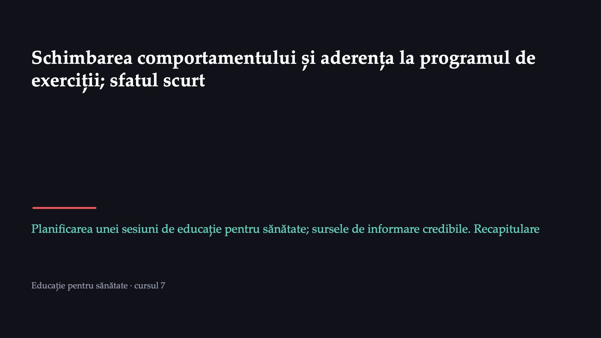
1 / 47Bună ziua. Cursul de azi are cele două teme din fișa disciplinei, a 13-a și a 14-a: schimbarea comportamentului și aderența la programul de exerciții, cu sfatul scurt; apoi planificarea unei sesiuni de educație pentru sănătate și sursele credibile. La sfârșit facem recapitularea semestrului. Nu începem însă cu teoria, ci cu ceva ce ați făcut deja, acasă, în ultimele trei zile.
Trei zile, un program real
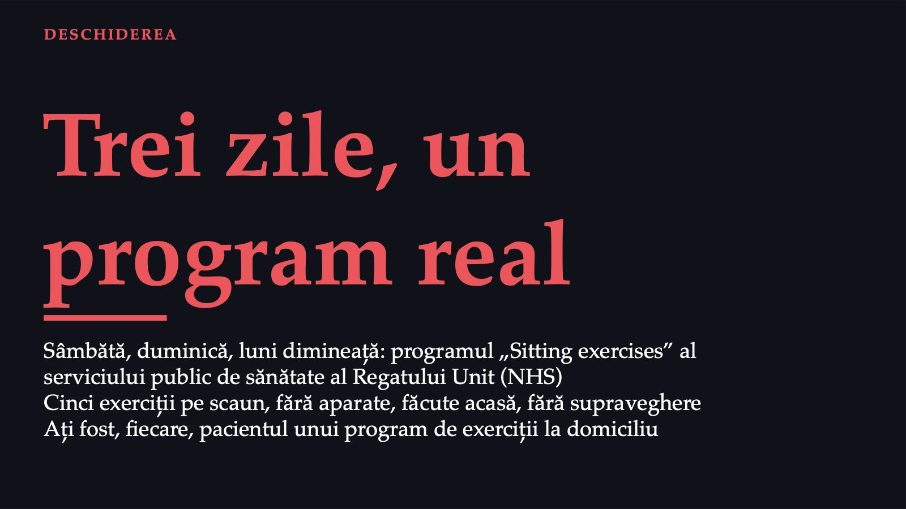
2 / 47Timp de trei zile ați fost, fiecare, pacientul unui program real de exerciții la domiciliu. Programul este scurt, cinci exerciții, nu cere aparate, se face pe un scaun obișnuit și este publicat de un serviciu public de sănătate, cu data reviziei vizibilă. Seamănă cu programele pe care le veți da pacienților: câteva exerciții, cu repetări precise, de făcut acasă, fără ca cineva să vă vadă.
Azi, în trei pași
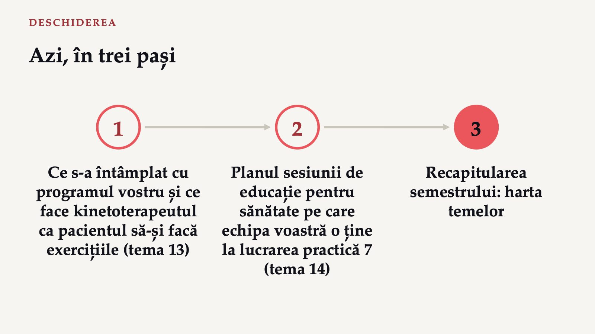
3 / 47Prima parte pornește de la datele voastre și ajunge la ce face kinetoterapeutul cu un singur pacient: aderența, tehnicile de schimbare a comportamentului, sfatul scurt. A doua parte este despre un grup: fiecare echipă scrie planul sesiunii pe care o ține miercuri sau vineri, la lucrarea practică 7. La sfârșit, recapitularea semestrului, ca o hartă cu trimiteri.
60%
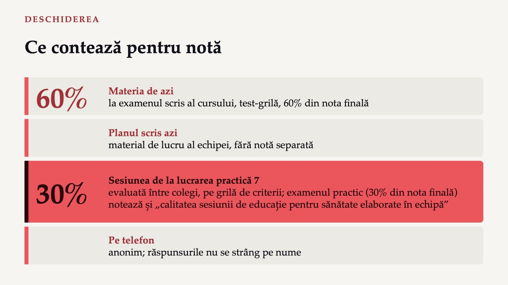
4 / 47Materia de azi intră la examenul scris al cursului, testul-grilă, care are 60% din nota finală. Planul pe care îl scrieți azi nu primește notă: este materialul de lucru al echipei pentru lucrarea practică 7, unde sesiunea se prezintă și se evaluează între colegi, pe grilă de criterii. Examenul practic, cu 30% din nota finală, notează, între altele, calitatea sesiunii elaborate în echipă. Ce spuneți pe telefon este anonim.
Programul, pe scurt (rezumatul disciplinei)
![PARTEA ÎNTÂI: TREI ZILE CU UN PROGRAM PE SCAUN Programul, pe scurt (rezumatul disciplinei) Întinderea pieptului postura; menținere 5–10 secunde, de 5 ori Răsucirea trunchiului flexibilitatea părții de sus a spatelui; menținere 5 secunde, de 5 ori pe fiecare parte Ridicarea alternativă a genunchilor forța șoldurilor și a coapselor; 5 ridicări cu fiecare picior Întinderea gleznei flexibilitatea gleznei; 2 serii de câte 5, cu fiecare picior Rotația gâtului mobilitatea gâtului; menținere 5 secunde, 3 rotații pe fiecare parte NHS cel puțin de două ori pe săptămână, cu celelalte rutine ale seriei. Cele trei zile la rând au fost sarcina cursului](diapozitive/C07/005.jpg) 5 / 47
5 / 47Ca să vorbim despre același lucru, acestea au fost cele cinci exerciții, cu dozele de pe pagina NHS. Pagina recomandă exercițiile de cel puțin două ori pe săptămână, împreună cu celelalte programe ale seriei: flexibilitate, echilibru, forță. Cele trei zile la rând nu sunt recomandarea NHS; au fost sarcina cursului, ca să aveți, până azi, experiența unui pacient care primește un program de acasă.
A
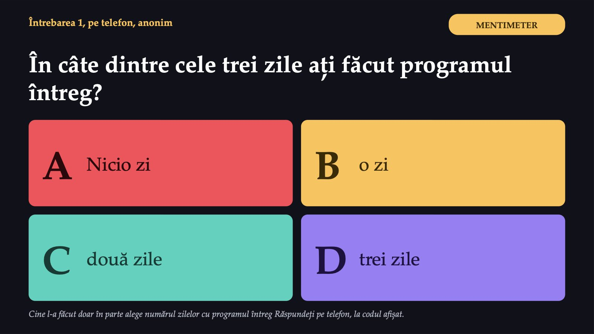
6 / 47Luați telefonul. Prima întrebare este despre voi și nu are o variantă bună sau una rea: în câte dintre cele trei zile ați făcut programul întreg? Dacă într-o zi l-ați făcut doar în parte, ziua aceea nu se numără. Nimeni nu vede cine ce a ales.
?
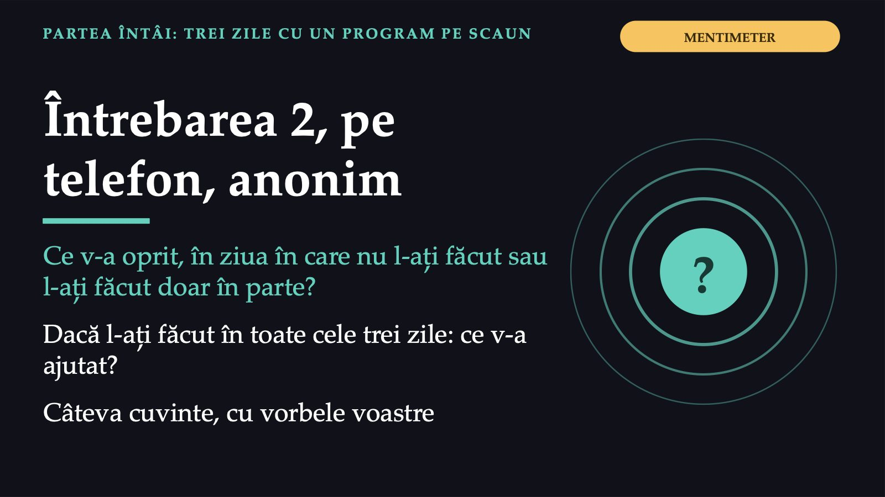
7 / 47A doua întrebare are răspuns liber, de câteva cuvinte, cu vorbele voastre și fără să vă cenzurați. Ce v-a oprit în ziua în care nu ați făcut programul sau l-ați făcut doar în parte? Cine l-a făcut în toate cele trei zile scrie ce l-a ajutat. Un motiv medical, o accidentare sau o durere care nu trece, este un răspuns la fel de bun ca oricare altul.
Ce ați răspuns
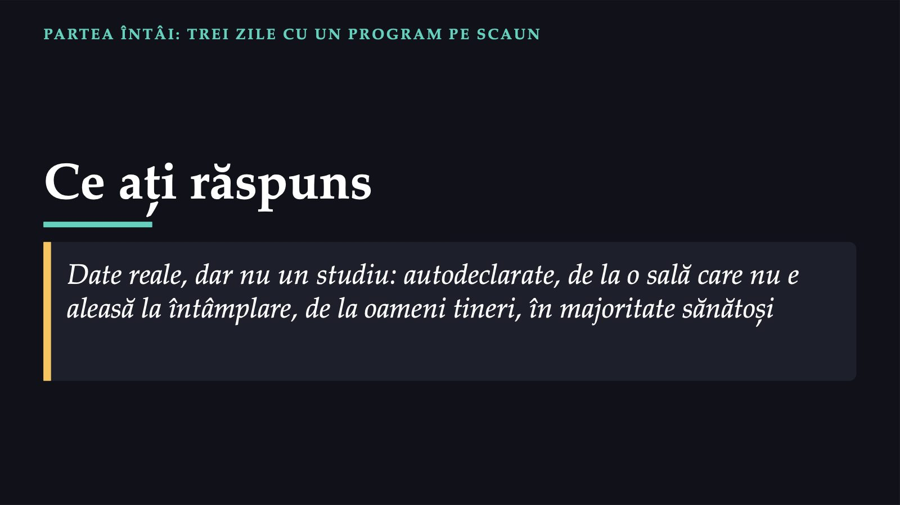
8 / 47Acestea sunt datele voastre. Sunt reale, dar nu sunt un studiu: le-ați raportat voi, despre voi, fără ca cineva să verifice; o sală de studenți nu este aleasă la întâmplare; și nimeni nu a numărat câți au uitat de sarcină încă de sâmbătă. De aceea nu le transformăm într-un procent pe care să-l comparăm cu cifrele din studii. Le folosim ca să vedeți, pe voi înșivă, cum se adună motivele unui om într-o zi obișnuită.
1
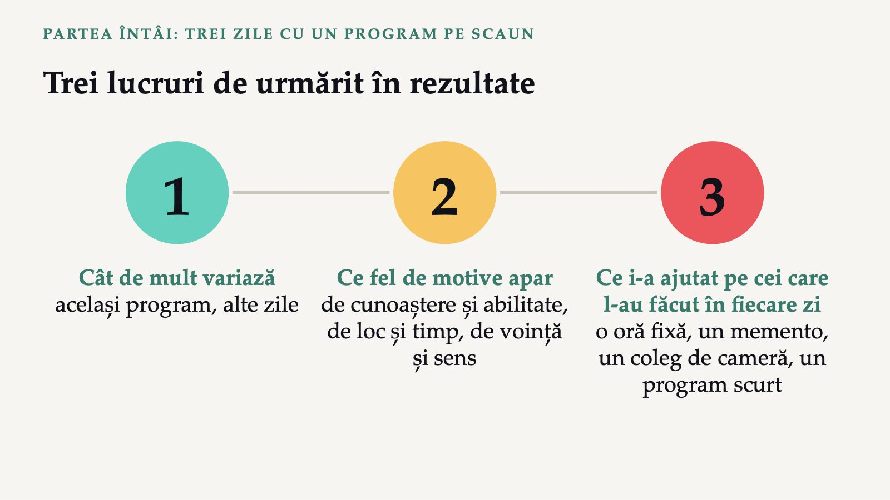
9 / 47Programul a fost același pentru toți; ce s-a întâmplat cu el nu a fost același. Dacă programul ar fi singurul lucru care contează, toți ați fi răspuns la fel. Uitați-vă apoi la felul motivelor: unele țin de ce știți și puteți, altele de loc și de timp, altele de voință și de sens. Și uitați-vă la ce i-a ajutat pe cei care l-au făcut în fiecare zi: le vom regăsi în sintezele de mai departe.
Prin ce semănați cu un pacient și prin ce nu
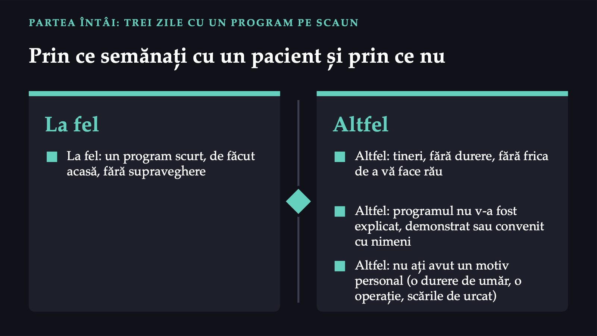
10 / 47Ați fost pacienții unui program real, dar nu ca pacienții adevărați. Sunteți tineri, în cea mai mare parte sănătoși, fără durere și fără frica de a vă face rău. Programul nu v-a fost explicat de un kinetoterapeut, nu l-ați exersat în fața cuiva și nu l-ați convenit cu nimeni: l-ați primit ca sarcină de curs, de pe o pagină de internet. Și nu ați avut un motiv personal să-l faceți. Unele motive pentru care nu l-ați făcut vor fi aceleași cu ale pacienților, altele nu.
Aderența
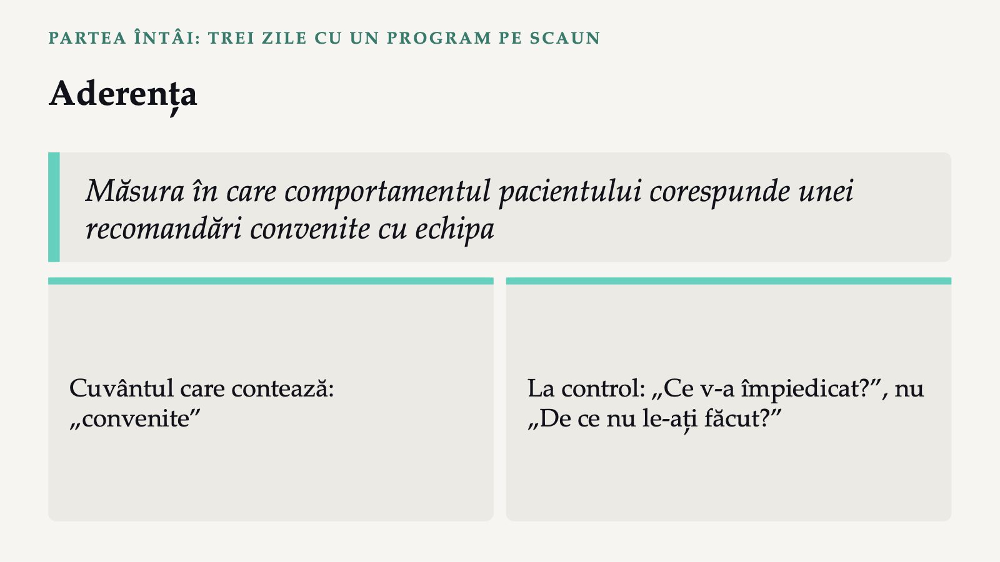
11 / 47Ați întâlnit definiția la lucrarea practică a cincea: aderența este măsura în care comportamentul pacientului corespunde unei recomandări convenite cu echipa. Cuvântul care contează este „convenite”. Sinteza publicată în 2021 de Collado-Mateo și colaboratorii folosește aceeași idee: comportamentul persoanei față de planul convenit al programului de exercițiu. De aceea, la control, întrebarea potrivită este „Ce v-a împiedicat?”, nu „De ce nu le-ați făcut?”.
✓
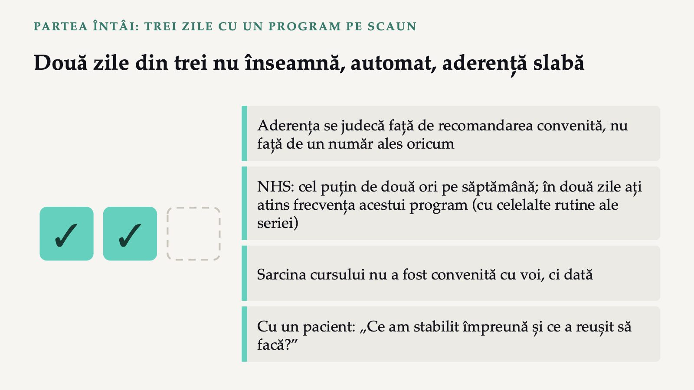
12 / 47Cine a făcut programul în două zile poate crede că a avut o aderență slabă. Aderența se judecă însă față de recomandarea convenită. Pagina NHS recomandă exercițiile de cel puțin două ori pe săptămână; în două zile ați atins frecvența acestui program, chiar dacă nu ați îndeplinit sarcina cursului. Iar sarcina cursului nu a fost convenită cu voi, ci dată. Cu un pacient, întrebarea nu este „câte zile din câte am cerut eu?”, ci „ce am stabilit împreună și ce a reușit să facă?”.
Prezența la ședințe nu este aderență
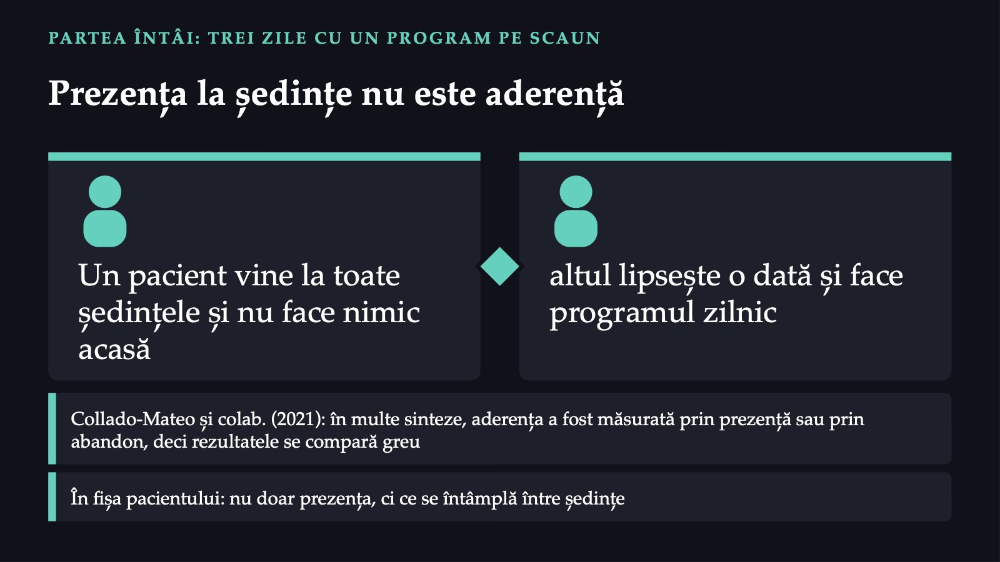
13 / 47Aceeași sinteză face o distincție utilă pentru orice kinetoterapeut: prezența la ședințe și abandonul nu sunt același lucru cu aderența. Un pacient poate veni la toate ședințele din cabinet și să nu facă nimic acasă; altul poate lipsi o dată și să facă programul în fiecare zi. Dacă în fișă scrieți doar prezența, nu știți nimic despre ce se întâmplă între ședințe. Autorii notează că, în multe dintre sintezele incluse, aderența a fost măsurată prin prezență sau prin abandon, deci rezultatele se compară greu.
50%
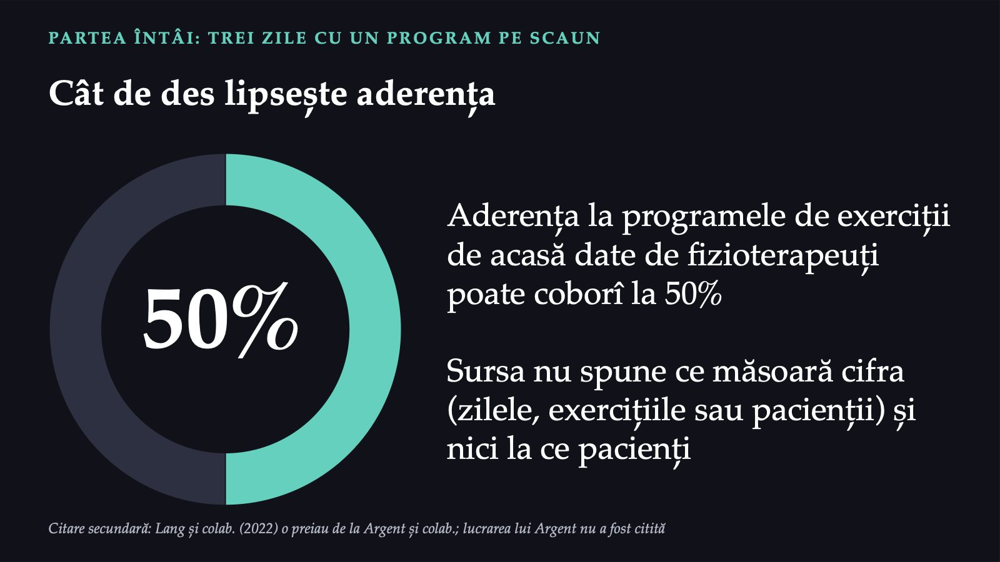
14 / 47Lang și colaboratorii, într-o sinteză din 2022, preiau de la Argent și colaboratorii estimarea că aderența la programele de exerciții de acasă date de fizioterapeuți poate coborî la 50%. Este o citare secundară: Lang și colaboratorii nu au măsurat cifra, iar notele cursului nu au citit lucrarea lui Argent. Nu știm ce numără cifra și nici la ce pacienți. Ideea practică este alta: un program de acasă, oricât de bine ales, nu se face de la sine.
Timpul care nu ajunge; orele de lucru
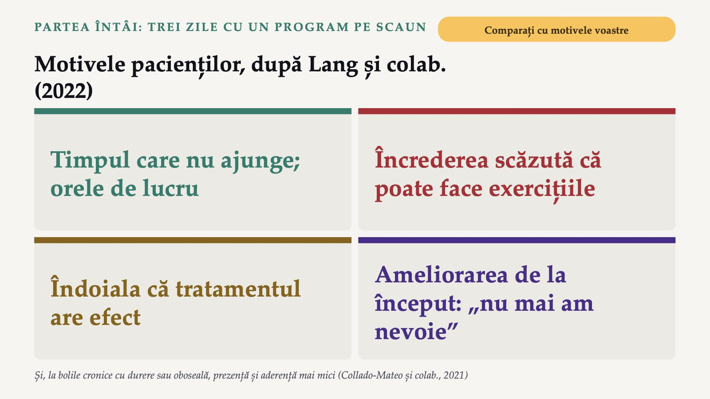
15 / 47Tot acolo sunt numite cauzele probabile: timpul care nu ajunge, orele de lucru, încrederea scăzută că poate face exercițiile, îndoiala că tratamentul are efect și, paradoxal, ameliorarea de la început. Comparați lista cu motivele voastre. Lipsa timpului și uitarea apar probabil și la voi. Frica de durere sau convingerea că exercițiul face rău, pe care lista de la lucrarea practică a cincea o pune prima, probabil că nu. Diferența arată de ce un program bun pentru un om sănătos nu este automat bun pentru un pacient: pacientul are motive în plus, pe care le aflați întrebându-l.
Știți deja: capacitate, oportunitate, motivație
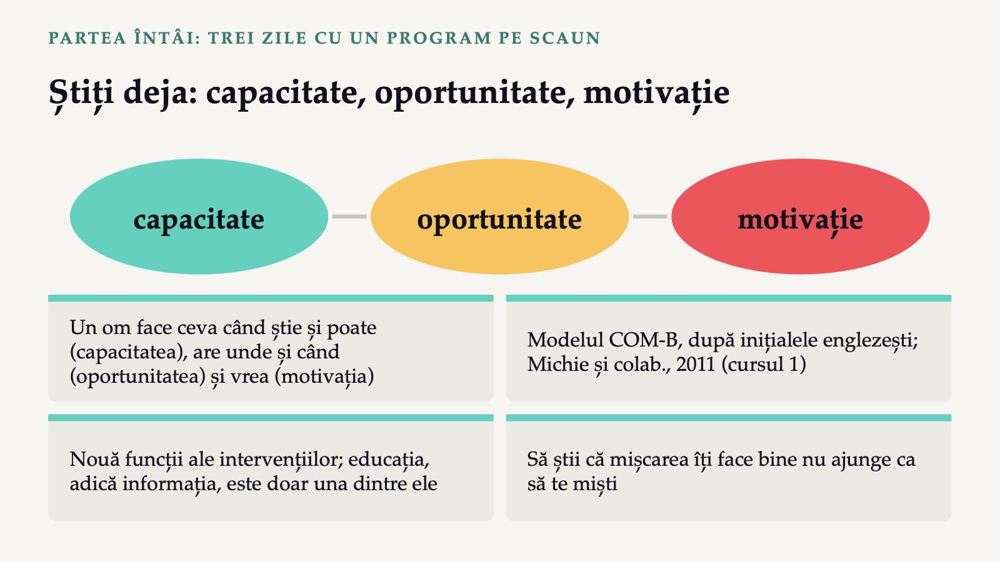
16 / 47Știți de la primul curs modelul propus de Susan Michie și colaboratorii în 2011: un om face ceva atunci când știe și poate, are unde și când și vrea. Același cadru așază în jurul celor trei condiții nouă funcții ale intervențiilor, de la educație și convingere la instruire, modelare, restructurarea mediului și facilitare. Educația este doar una dintre ele. Ați văzut-o singuri în aceste trei zile: să știi că mișcarea îți face bine nu ajunge ca să te miști.
93
![PARTEA ÎNTÂI: TREI ZILE CU UN PROGRAM PE SCAUN Primul termen nou: tehnica de schimbare a comportamentului Cea mai mică parte observabilă și repetabilă a unei intervenții care urmărește să schimbe un comportament (formularea disciplinei) 93 93 de tehnici, „componentele active” ale intervențiilor: după Meade și colab. (2019), care citează taxonomia lui Michie și colab. din 2013 Exemple: obiectivul stabilit împreună, demonstrarea exercițiului, exersarea în fața terapeutului, un memento, sprijinul cuiva din familie În fișă, nu „l-am motivat”, ci: „am stabilit împreună obiectivul de a urca scările până la etajul doi fără oprire, am exersat de trei ori ridicarea de pe scaun, am lăsat un plan «dacă–atunci»”](diapozitive/C07/017.jpg) 17 / 47
17 / 47Ca să ajungem de la funcții la ce face concret profesionistul, cercetarea a descris componentele mici, observabile, ale intervențiilor: tehnicile de schimbare a comportamentului. Meade și colaboratorii, citând taxonomia lui Michie și a colaboratorilor din 2013, vorbesc de 93 de tehnici. Lista nu se învață pe de rost; este un limbaj comun. În fișa pacientului, „l-am motivat” nu spune nimic colegului care vine după voi; o frază cu obiectivul, exersarea și planul „dacă–atunci” spune tot.
Prima sinteză: ce tehnici ajută aderența
![PARTEA ÎNTÂI: TREI ZILE CU UN PROGRAM PE SCAUN Prima sinteză: ce tehnici ajută aderența Meade și colab. (2019) 8 studii Meade și colab. (2019): studii randomizate controlate la adulți cu durere musculo-scheletală persistentă (de cel puțin 3 luni); ambele grupuri primeau exerciții, grupul de intervenție primea în plus tehnici de schimbare a comportamentului (căutarea încheiată în august 2017) 8 studii (5 cu risc scăzut de eroare sistematică, 3 cu risc ridicat); 5 au arătat o diferență în aderență în favoarea grupului de intervenție Dovezi de calitate moderată pentru cinci tehnici: sprijinul social, stabilirea obiectivelor, instrucțiunile, demonstrarea, exersarea](diapozitive/C07/018.jpg) 18 / 47
18 / 47Prima sinteză răspunde la întrebarea practică: ce poate face profesionistul ca pacientul să-și facă exercițiile? Meade și colaboratorii au analizat studii randomizate controlate la adulți cu durere musculo-scheletală persistentă, de cel puțin 3 luni. În ambele grupuri pacienții primeau exerciții; grupul de intervenție primea în plus cel puțin o tehnică de schimbare a comportamentului. Au găsit 8 studii; 5 au arătat o diferență în aderență în favoarea grupului de intervenție. Dovezile de calitate moderată susțin cinci tehnici: sprijinul social, stabilirea obiectivelor, instrucțiunile despre cum se face exercițiul, demonstrarea și exersarea lui.
7
![PARTEA ÎNTÂI: TREI ZILE CU UN PROGRAM PE SCAUN Puține tehnici, făcute bine 7 În aceeași sinteză, intervențiile cu cel mult 7 tehnici în plus față de grupul de control au fost mai eficace decât cele cu mai mult de 7 Concluzia autorilor: dovezi limitate, de calitate moderată, pentru un număr mic de tehnici Rezultatul privește adulții cu durere musculo-scheletală persistentă; nu îl extindem la pacienții operați, la bolile neurologice sau la copii Trei dintre cele cinci tehnici se fac în cabinet: instrucțiunile, demonstrarea, exersarea](diapozitive/C07/019.jpg) 19 / 47
19 / 47Al doilea rezultat este la fel de practic. Autorii au comparat intervențiile după câte tehnici adăugau față de grupul de control: cele cu cel mult 7 tehnici au fost mai eficace decât cele cu mai mult de 7. Concluzia lor: dovezile, limitate și de calitate moderată, susțin un număr mic de tehnici. Rezultatul privește adulții cu durere musculo-scheletală persistentă; nu îl extindem la pacienții operați, la bolile neurologice sau la copii. Observați și că trei dintre cele cinci tehnici, instrucțiunile, demonstrarea și exersarea, se fac în cabinet: exact ce v-a lipsit vouă în cele trei zile.
14
![PARTEA ÎNTÂI: TREI ZILE CU UN PROGRAM PE SCAUN A doua sinteză: factorii aderenței Nu este o ordine a importanței; sunt factori asociați cu aderența, nu efecte măsurate 14 Collado-Mateo și colab. (2021), sinteză umbrelă (o sinteză a sintezelor), la pacienți cu boli cronice și la vârstnici: 55 de articole, 14 factori-cheie numiți de cel puțin 10 sinteze Între ei programul supravegherea explorarea inițială a barierelor așteptările realiste plăcerea integrarea în viața de zi cu zi sprijinul social informațiile despre progres încrederea în propriile puteri rolul activ obiectivele tehnologia](diapozitive/C07/020.jpg) 20 / 47
20 / 47A doua sinteză, a lui Collado-Mateo și a colaboratorilor, este o sinteză umbrelă, adică o sinteză a sintezelor, despre pacienții cu boli cronice și despre vârstnici. Din 55 de articole, autorii au găsit 14 factori-cheie, numiți ca relevanți pentru aderență de cel puțin 10 sinteze. Lista nu este o ordine a importanței: sinteza numără câte sinteze au numit fiecare factor, nu cât contează el. Concluzia autorilor este încurajatoare: aderența depinde de mai multe variabile pe care profesioniștii le pot controla. Despre tehnologie, Lang și colaboratorii au concluzionat că aplicațiile și mesajele probabil cresc aderența pe termen scurt, iar efectul pe termen lung este mai puțin sigur.
De la motiv la tehnică (1): capacitatea și oportunitatea
![PARTEA ÎNTÂI: TREI ZILE CU UN PROGRAM PE SCAUN De la motiv la tehnică (1): capacitatea și oportunitatea Motivele voastre: toți deodată, unu, două sau trei degete (capacitatea, oportunitatea, motivația) „Nu mai știu cum se face exercițiul acasă” capacitatea instrucțiuni clare, demonstrare, exersare în fața voastră „Nu cred că pot” capacitatea și motivația un obiectiv mic, atins repede; informații despre progres „Nu am timp”, „lucrez în ture” oportunitatea integrarea în viața de zi cu zi; planul „dacă–atunci” „Nu am unde, nu am cu ce” oportunitatea programul adaptat locuinței: un scaun de bucătărie, fără aparate](diapozitive/C07/021.jpg) 21 / 47
21 / 47Când aflați de ce pacientul nu își face exercițiile, primul pas este să puneți motivul în căsuța potrivită. Fiecare căsuță cere alt ajutor, iar ajutorul din căsuța greșită nu folosește: un memento nu rezolvă frica de durere, iar o explicație despre beneficii nu rezolvă lipsa unui loc unde să faceți exercițiile. Gruparea pe cele trei condiții și exemplele sunt ale disciplinei, nu ale autorilor. Puneți acum motivele voastre din cele trei zile în aceste căsuțe: pentru fiecare motiv citit din răspunsurile voastre, ridicați toți deodată unu, două sau trei degete, pentru capacitate, oportunitate sau motivație. Unele motive încap în două căsuțe, iar căsuța aleasă hotărăște ajutorul.
De la motiv la tehnică (2): motivația și sprijinul
 22 / 47
22 / 47Celelalte motive țin mai ales de motivație și de sprijinul celorlalți. Pentru „nu cred că funcționează”, ce va putea face după câteva săptămâni, spus în viața lui. Pentru „mă simt mai bine”, ce se întâmplă dacă se oprește acum și ce urmează după. Pentru „mă doare”, doza ajustată și o regulă scrisă pentru zilele cu durere. Pentru „singur nu mă țin de el”, cineva alături: un membru al familiei sau un grup cu care face exercițiile.
Programul convenit, în șapte pași (ordinea de lucru a disciplinei, nu un protocol oficial)
![PARTEA ÎNTÂI: TREI ZILE CU UN PROGRAM PE SCAUN Programul convenit, în șapte pași (ordinea de lucru a disciplinei, nu un protocol oficial) 1 Aflați întâi omul: „Ce ar putea să vă împiedice să faceți asta acasă?” 2 Stabiliți împreună obiectivul, în viața lui, apoi în termeni măsurabili 3 Puține exerciții, explicate, demonstrate, exersate 4 Verificați înțelegerea prin reformulare: spune și arată 5 Legați exercițiile de un moment al zilei: planul „dacă–atunci” 6 Cineva alături: sprijinul social 7 Urmăriți și spuneți ce s-a schimbat; revizuiți programul după ce s-a întâmplat](diapozitive/C07/023.jpg) 23 / 47
23 / 47Din cele două sinteze și din ce ați învățat în semestru se poate scrie felul în care un kinetoterapeut construiește un program de acasă care are șanse să fie făcut. Pașii nu sunt un protocol oficial; sunt ordinea de lucru a disciplinei, cu sursa fiecărei idei în note. Întrebarea „Ce ar putea să vă împiedice?”, pusă înainte, este mai utilă decât „De ce nu le-ați făcut?”, pusă după. Iar ambivalența, faptul că omul vrea și nu vrea în același timp, nu este un defect al pacientului: programul este al lui, nu al terapeutului.
Sfatul scurt
![PARTEA ÎNTÂI: TREI ZILE CU UN PROGRAM PE SCAUN Sfatul scurt Ghidul Organizației Mondiale a Sănătății (OMS) din 2024 despre tratamentul renunțării la fumat la adulți Recomandarea 1 îndemnul de a renunța, de câteva minute, adresat oricărui consumator de tutun, de regulă într-o consultație obișnuită Recomandarea 1: dat de rutină, constant, de personalul medical; între 30 de secunde și 3 minute; recomandare puternică, certitudine moderată Îi poate ajuta pe toți, indiferent de interesul lor de a renunța; este punctul de intrare spre sprijinul suplimentar L-ați exersat la lucrarea practică 5; azi, de ce funcționează](diapozitive/C07/024.jpg) 24 / 47
24 / 47Programul convenit se face cu pacientul venit pentru exerciții. Sfatul scurt se dă oricui, despre un comportament care îi afectează sănătatea, chiar dacă nu a venit pentru el. În ghidul Organizației Mondiale a Sănătății din 2024, sfatul scurt durează între 30 de secunde și 3 minute și se dă de rutină oricărui consumator de tutun ajuns în orice serviciu de sănătate; este o recomandare puternică, cu certitudine moderată. Îi poate ajuta pe toți, indiferent de interesul lor de a renunța. L-ați exersat la lucrarea practică a cincea; azi adăugăm explicația.
1
![PARTEA ÎNTÂI: TREI ZILE CU UN PROGRAM PE SCAUN Modelul celor 5 A (după inițialele englezești) OMS descrie modelul pentru tutun; folosirea lui la mișcare este adaptarea disciplinei 1 Întrebați cât se mișcă într-o săptămână obișnuită; notați în fișă 2 Sfătuiți o dată, limpede, legat de ce vrea el 3 Evaluați dacă e pregătit „nu acum” este un răspuns acceptabil și se notează 4 Ajutați un program convenit, un plan „dacă–atunci”, un loc unde se poate mișca în siguranță 5 Programați notați și reveniți la întâlnirea următoare](diapozitive/C07/025.jpg) 25 / 47
25 / 47Ghidul numește două modele care ajută ca sfatul să fie dat de rutină și bine. Primul este modelul celor 5 A, după inițialele englezești: întrebați, sfătuiți, evaluați, ajutați, programați. Ghidul îl descrie pentru tutun; folosirea lui la mișcare este adaptarea disciplinei, făcută la cursul al cincilea. La un pacient sedentar venit pentru o durere de genunchi: întrebați cât se mișcă într-o săptămână obișnuită și notați în fișă; sfătuiți o dată, legat de ce vrea el, de exemplu să urce din nou scările singur; evaluați dacă e pregătit, iar un „nu acum” se notează; ajutați cu un program convenit; programați revenirea.
Modelul celor 5 R: când omul nu e pregătit
![PARTEA ÎNTÂI: TREI ZILE CU UN PROGRAM PE SCAUN Modelul celor 5 R: când omul nu e pregătit Pacientul spune el de ce contează pentru el, ce riscă, ce câștigă, ce îl oprește; intervenția se reia la fiecare vizită La mișcare (adaptarea disciplinei): în viața lui, nu în statistici; o cale pentru fiecare obstacol; reveniți, fără presiune Trusa are peste 10 ani; rămâne documentul OMS la care trimite ghidul Trusa OMS din 2014, la care trimite ghidul din 2024: intervenția motivațională pentru consumatorii de tutun care nu sunt pregătiți să renunțe Relevanța riscurile recompensele obstacolele repetarea](diapozitive/C07/026.jpg) 26 / 47
26 / 47Al doilea model, al celor 5 R, vine din trusa OMS din 2014, la care trimite ghidul din 2024. Trusa are peste 10 ani, dar este documentul OMS la care trimite chiar ghidul. Este intervenția motivațională pentru consumatorii de tutun care nu sunt pregătiți să renunțe: relevanța, riscurile, recompensele, obstacolele, repetarea. Pacientul spune el de ce contează pentru el, ce riscă, ce câștigă și ce îl oprește, iar intervenția se reia la fiecare vizită. La mișcare, în disciplina noastră: întrebați-l ce ar conta pentru el, în viața lui, nu în statistici, căutați împreună o cale pentru fiecare obstacol și reveniți, fără presiune.
De ce poate ajuta un sfat de câteva minute
 27 / 47
27 / 47De ce poate ajuta un sfat de câteva minute? Pentru că atinge toate cele trei condiții. „Sfătuiți” și relevanța, riscurile, recompensele lucrează pe motivație. „Ajutați” lucrează pe capacitate și pe oportunitate. „Programați” și repetarea recunosc ce ați văzut în cele trei zile: un comportament nu se schimbă printr-o singură hotărâre; pentru tutun, ghidul spune că dependența cere adesea intervenții repetate și mai multe încercări de renunțare. Legătura cu cele trei condiții este explicația disciplinei, nu a ghidului. Iar kinetoterapeutul vede pacientul de multe ori, deci repetarea îi este la îndemână.
Pauză · zece minute
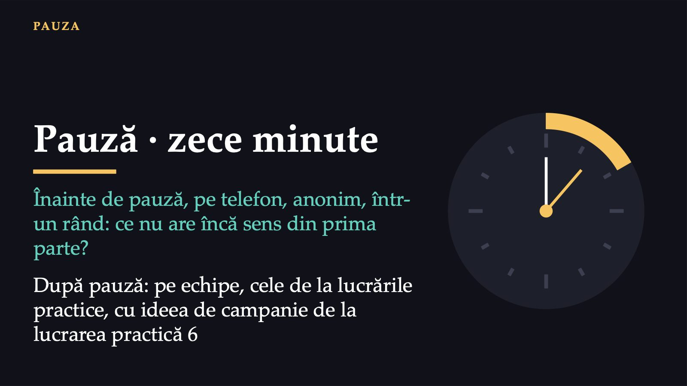
28 / 47Înainte să ieșiți, pe telefon, anonim, într-un rând: ce nu are încă sens din prima parte? Răspunsurile le citim între timp. Ne revedem în zece minute. După aceea vă așezați pe echipe, cele de la lucrările practice, cu ideea de campanie de la lucrarea practică 6.
Al doilea termen nou: sesiunea de educație pentru sănătate
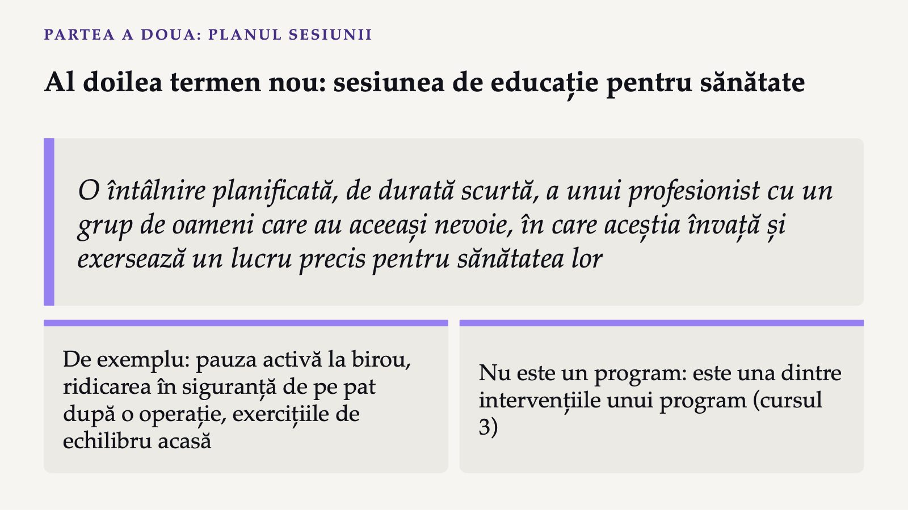
29 / 47Prima parte a fost despre un pacient; a doua este despre un grup. Kinetoterapeutul poate ține des sesiuni de educație pentru sănătate: în sala de așteptare a unui cabinet, la un club de vârstnici, într-o școală, într-o firmă. Sesiunea nu este un program: programul are etape, de la analiza nevoilor la evaluare, iar sesiunea este una dintre intervențiile lui. Seamănă cu mini-lecțiile de zece minute de la primul curs, dar este pentru un grup și are o parte în care participanții exersează.
Ce are o sesiune bună
 30 / 47
30 / 47Tot ce are o sesiune bună ați învățat deja în semestru; azi adunați totul într-un singur plan. Pentru activitate folosiți tehnicile pe care sinteza lui Meade le-a găsit susținute de dovezi moderate la adulții cu durere musculo-scheletală persistentă; folosirea lor la un grup este adaptarea disciplinei.
Nu
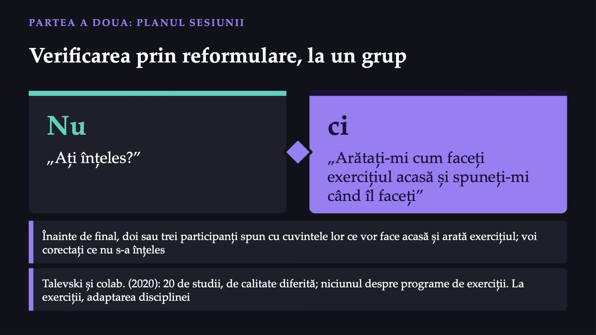
31 / 47Verificarea prin reformulare a fost studiată în 20 de studii, de calitate diferită, adunate de sinteza lui Talevski și a colaboratorilor din 2020. Niciunul nu privea programe de exerciții: pacienții aveau boli cronice, erau operați sau externați din urgență. Folosirea ei la o sesiune de exerciții este adaptarea disciplinei. La o sesiune de grup, înainte de final, doi sau trei participanți spun cu cuvintele lor ce vor face acasă și arată exercițiul. Nu „Ați înțeles?”, la care toată lumea spune „da”.
Formularul de plan: nouă câmpuri
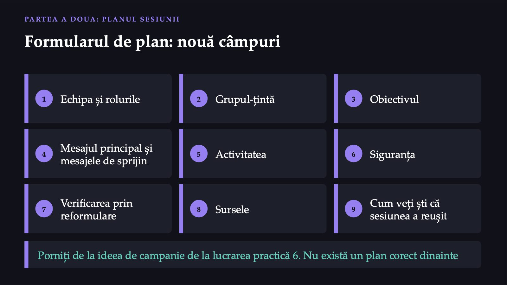
32 / 47Fiecare echipă primește acum formularul de plan. Îl completați în ordine, câmp cu câmp, pornind de la ideea de campanie de la lucrarea practică 6. Câmpurile urmează ordinea în care se ia o decizie despre o sesiune, nu ordinea în care o țineți. Nu există un plan corect dinainte, ci un plan pe care echipa îl poate susține miercuri sau vineri. Formularul rămâne la voi.
Câmpurile 1–3: cine, pentru cine, ce vor putea face
![PARTEA A DOUA: PLANUL SESIUNII Câmpurile 1–3: cine, pentru cine, ce vor putea face Rolurile cine deschide, cine demonstrează, cine conduce exersarea, cine face verificarea, cine încheie Grupul-țintă prin nevoia lui „pacienți vârstnici cu artroză de genunchi, care fac exerciții la cabinet de două ori pe săptămână și nu le fac acasă”, nu „pacienții cabinetului” Cel puțin două obstacole, fiecare cu condiția care lipsește capacitate, oportunitate sau motivație Obiectivul, după verb „să facă”, „să arate”, „să aleagă”; nu „să înțeleagă”, „să conștientizeze”](diapozitive/C07/033.jpg) 33 / 47
33 / 47Câteva observații despre primele câmpuri. Fiecare membru al echipei are un rol vizibil în sesiune. Grupul-țintă se descrie prin nevoia lui: „pacienții cabinetului” nu spune nimic despre ce trebuie să conțină sesiunea. Obstacolele le grupați pe capacitate, oportunitate și motivație, ca în prima parte: dacă grupul nu are unde să facă exercițiile acasă, sesiunea îi arată exerciții fără aparate. Iar obiectivul se recunoaște după verbul lui: „să înțeleagă” și „să conștientizeze” nu se pot verifica la sfârșitul sesiunii.
Câmpurile 4–5: mesajele și activitatea
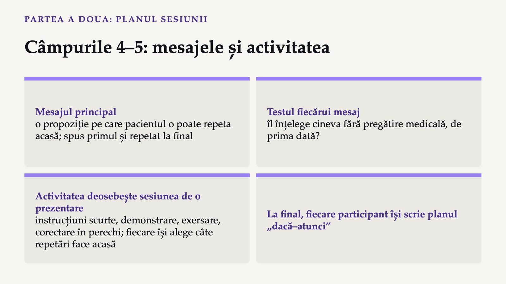
34 / 47Mesajul principal este o propoziție pe care pacientul o poate repeta acasă; verificați fiecare mesaj întrebându-vă dacă îl înțelege cineva fără pregătire medicală, de prima dată. Activitatea este partea care deosebește o sesiune de o prezentare. Folosiți câteva tehnici, bine făcute: instrucțiuni scurte, demonstrarea, exersarea, corectarea în perechi, iar fiecare participant își alege câte repetări face acasă. Nu adăugați zece tehnici: în sinteza lui Meade, intervențiile cu cel mult 7 tehnici au fost mai eficace decât cele cu mai mult de 7. Planul „dacă–atunci”, scris de fiecare la final, leagă sesiunea de viața lui de zi cu zi.
Câmpurile 6–7: siguranța și verificarea
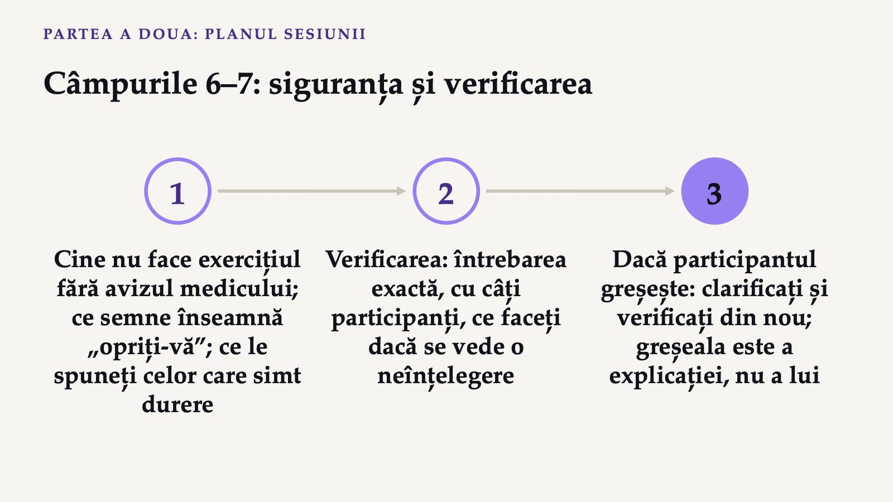
35 / 47Siguranța nu este o formalitate: scrieți cine nu face exercițiul fără avizul medicului, ce semne înseamnă „opriți-vă” și ce le spuneți celor care simt durere. La verificare scrieți întrebarea exactă, de pildă „Arătați-mi cum faceți exercițiul acasă și spuneți-mi când îl faceți”, cu câți participanți o faceți și ce faceți dacă se vede o neînțelegere. Dacă participantul greșește, clarificați și verificați din nou: greșeala este a explicației, nu a lui.
Al treilea termen nou: sursa credibilă de informații despre sănătate
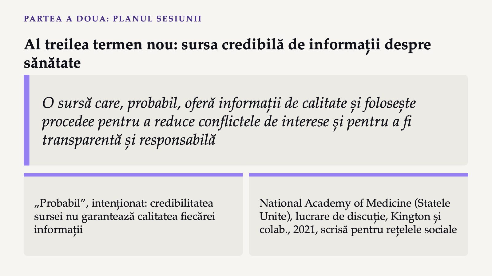
36 / 47Câmpul al optulea cere surse. Ați întâlnit deja informațiile false, informația de pe internet și grila de analiză a materialelor. Lipsește o întrebare simplă: după ce recunoașteți o sursă în care puteți avea încredere? Un răspuns de referință l-a dat în 2021 National Academy of Medicine din Statele Unite, într-o lucrare de discuție semnată de Kington și colaboratorii, gândită pentru rețelele sociale. Definiția spune că sursa credibilă oferă „probabil” informații de calitate; autorii aleg cuvântul intenționat: credibilitatea sursei nu garantează calitatea fiecărei informații.
Trei principii
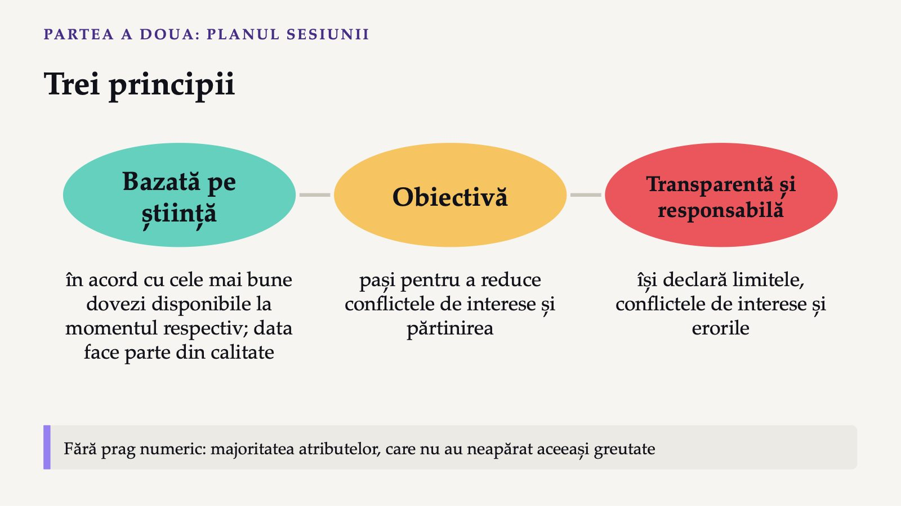
37 / 47Definiția se sprijină pe trei principii. Bazată pe știință: informațiile sunt în acord cu cele mai bune dovezi disponibile la momentul respectiv; de aceea o pagină fără dată nu vă spune dacă reflectă dovezile de azi. Obiectivă: sursa face pași pentru a reduce conflictele de interese; un producător de aparate de exerciții poate avea informații corecte, dar are un motiv să vă vândă aparatul. Transparentă și responsabilă: sursa își declară limitele și erorile; o sursă credibilă nu este una care nu greșește, ci una care spune când a greșit. Autorii nu au stabilit un prag numeric, deci nu există o listă de bifat cu un scor de trecere, ci trei întrebări.
Cele trei întrebări, puse paginii NHS
![PARTEA A DOUA: PLANUL SESIUNII Cele trei întrebări, puse paginii NHS NHS revizuită la 18 ianuarie 2024 Bazată pe știință: revizuită la 18 ianuarie 2024, următoarea revizie la 18 ianuarie 2027; în textul paginii nu apar trimiteri la studii, deci judecați emitentul și procedura lui de revizie Obiectivă: emitent public; pagina nu vinde nimic Transparentă și responsabilă: își spune limita (cine nu e sigur întreabă medicul) și are o legătură pentru semnalarea unei probleme a site-ului Concluzia: credibilă pentru exercițiile blânde pe scaun; pentru efectul exercițiilor, aveți nevoie și de o sinteză sau de un ghid](diapozitive/C07/038.jpg) 38 / 47
38 / 47Puneți cele trei întrebări chiar paginii pe care ați lucrat. Bazată pe știință: pagina a fost revizuită la 18 ianuarie 2024, iar următoarea revizie este programată la 18 ianuarie 2027, deci este ținută la zi; în textul ei nu apar însă trimiteri la studii, așa că judecați emitentul și procedura lui de revizie. Obiectivă: emitentul este public și pagina nu vinde nimic. Transparentă: își spune limita principală și are o legătură pentru semnalarea unei probleme a site-ului. Concluzia: o sursă credibilă pentru un mesaj despre exercițiile blânde pe scaun; pentru o afirmație despre efectul exercițiilor aveți nevoie și de o sinteză sau de un ghid.
Câmpul 8, în practică
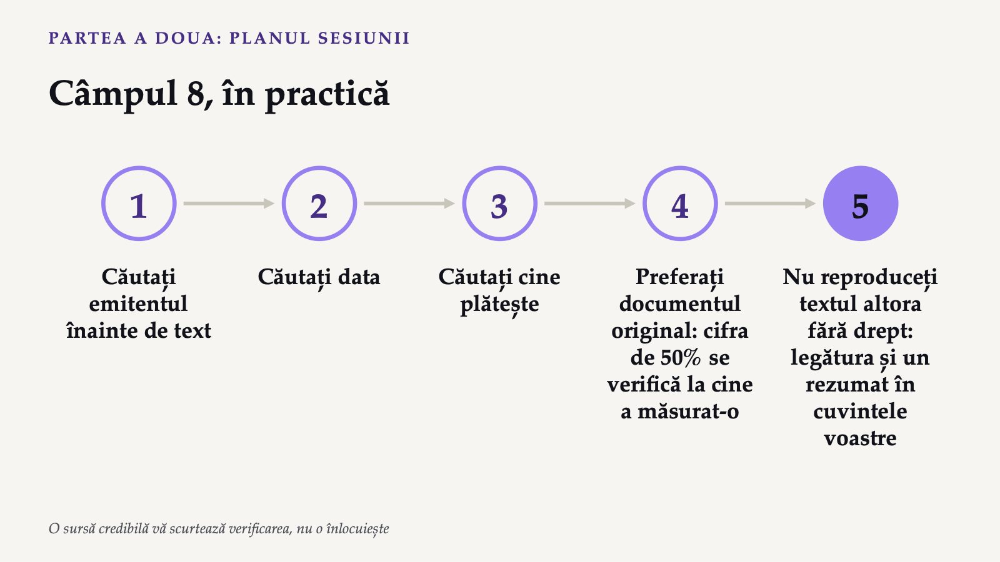
39 / 47Pentru câmpul al optulea, câteva reguli. Căutați emitentul înainte de text: OMS, instituțiile publice de sănătate, societățile profesionale și revistele cu evaluare de către colegi îndeplinesc de obicei mai multe atribute decât un blog; „de obicei” nu înseamnă „întotdeauna”. Căutați data și cine plătește. Preferați documentul original: cifra de 50% se verifică la Argent și colaboratorii, nu la Lang și colaboratorii, care au preluat-o. Și nu reproduceți textul altora fără drept: dați legătura și un rezumat în cuvintele voastre. O sursă credibilă vă scurtează verificarea, nu o înlocuiește.
Câmpurile 8–9: sursele și cum veți ști că sesiunea a reușit
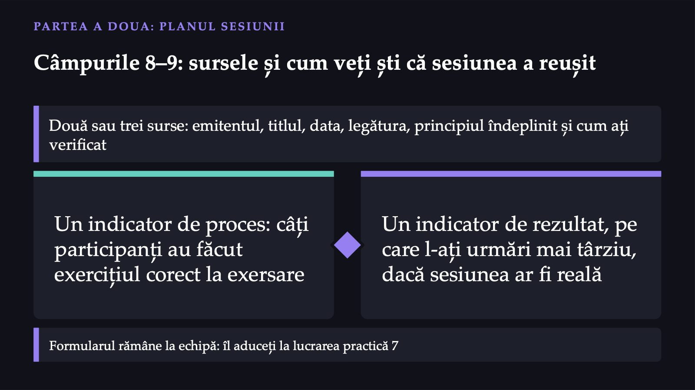
40 / 47Înapoi la formular. La surse scrieți, pentru fiecare, emitentul, titlul, data, legătura și, într-un rând, principiul pe care îl îndeplinește și cum ați verificat. La ultimul câmp, un indicator de proces, de exemplu câți participanți au făcut exercițiul corect la exersare, și unul de rezultat, pe care l-ați urmări mai târziu dacă sesiunea ar fi reală. Formularul îl aduceți la lucrarea practică 7.
Firul planului (1): unde intră fiecare temă în sesiunea voastră
![RECAPITULAREA SEMESTRULUI Firul planului (1): unde intră fiecare temă în sesiunea voastră Grupul-țintă și obstacolele evaluarea nevoilor și determinanții (lucrarea practică 1), problema și publicul-țintă (cursul 3), capacitate–oportunitate–motivație (cursul 1 și cursul de azi) Obiectivul obiectivul măsurabil (cursul 2), obiectivele și indicatorii (cursul 3) Mesajele mesajul principal și testarea cu pacienții (lucrarea practică 4), limbajul accesibil (cursul 6), informațiile false (cursul 2) Activitatea învățarea unei mișcări și planul „dacă–atunci” (cursul 2), recomandările de activitate fizică (cursul 4), prevenția și pauza activă (cursul 5), exercițiile de echilibru (cursul 6), tehnicile pentru aderență (cursul de azi)](diapozitive/C07/041.jpg) 41 / 47
41 / 47Recapitularea nu repetă cursurile; este o hartă. Planul pe care tocmai l-ați scris folosește aproape toate temele semestrului, de aceea harta urmează firul planului. Pentru grupul-țintă ați folosit evaluarea nevoilor, problema și publicul-țintă și cele trei condiții; pentru obiectiv, obiectivul măsurabil; pentru mesaje, mesajul principal și limbajul accesibil; pentru activitate, metodele de învățare a unei mișcări, planul „dacă–atunci”, recomandările de activitate fizică și tehnicile de azi.
Firul planului (2)
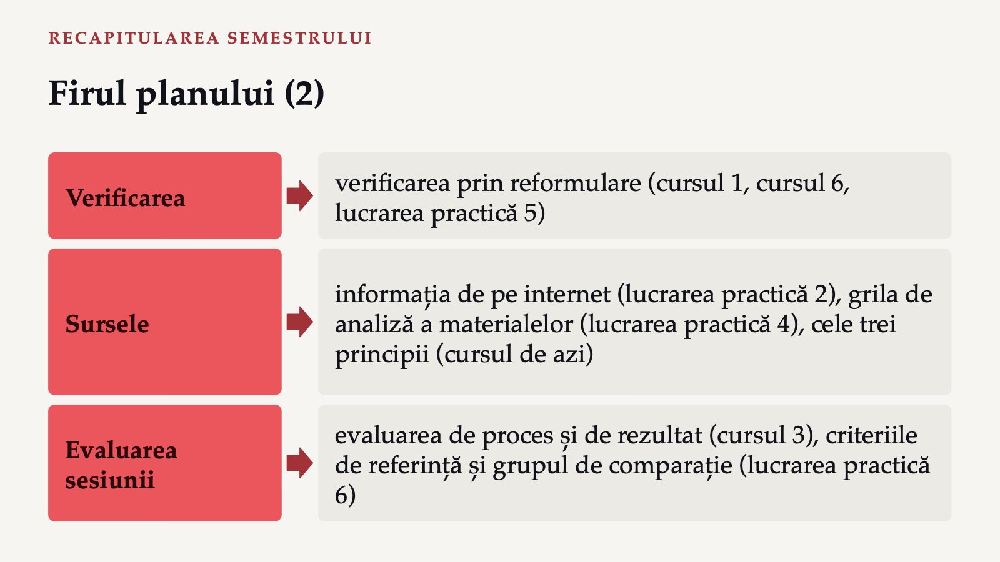
42 / 47Verificarea prin reformulare a apărut de trei ori: la primul curs, la cursul al șaselea și la lucrarea practică a cincea. Sursele: informația de pe internet, grila de analiză a materialelor și, azi, cele trei principii. Iar evaluarea sesiunii vine din cursul al treilea, cu evaluarea de proces și de rezultat, și din lucrarea practică a șasea, cu criteriile de referință și grupul de comparație.
Harta cursurilor
![RECAPITULAREA SEMESTRULUI Harta cursurilor Cursul 1 Ce este educația pentru sănătate; capacitate–oportunitate–motivație; planificarea unei ședințe; siguranța și etica Cursul 2 Principiile, scopurile și metodele; obiectivul măsurabil; planul „dacă–atunci”; conversația motivațională Cursul 3 Etapele unui program: nevoile, obiectivele și indicatorii, intervențiile, evaluarea Cursul 4 Activitatea fizică, sedentarismul, alimentația, somnul, stresul; recomandările OMS Cursul 5 Prevenția; fumatul și alcoolul; afecțiunile musculo-scheletale și ergonomia Cursul 6 Prevenirea căderilor la vârstnic; comunicarea cu pacientul Cursul 7 Aderența și sfatul scurt; sesiunea de educație și sursele credibile](diapozitive/C07/043.jpg) 43 / 47
43 / 47Aceasta este harta cursurilor. Pentru fiecare curs, notele de azi dau trimiterile exacte la secțiunile în care găsiți fiecare temă. Cine a lipsit la un curs găsește acolo tot ce s-a discutat.
Harta lucrărilor practice
![RECAPITULAREA SEMESTRULUI Harta lucrărilor practice Lucrarea practică 1 Ce face asistentul de balneofiziokinetoterapie (BFK) pentru educația pentru sănătate: fișa postului, determinanții, evaluarea nevoilor Lucrarea practică 2 Pacientul și cartierul: comunitatea, informația de pe internet Lucrarea practică 3 Un program de educație pentru sănătate: planul pe o pagină, marketingul social, planul echipei Lucrarea practică 4 Analiza critică a materialelor: mesajul principal, grila în cinci întrebări, testarea cu pacienții Lucrarea practică 5 Programul de exerciții la domiciliu și sfatul scurt: verificarea prin reformulare, aderența, ambivalența Lucrarea practică 6 Campaniile de marketing social: criteriile de referință, grupul de comparație, ideea echipei](diapozitive/C07/044.jpg) 44 / 47
44 / 47La fel pentru lucrările practice. Lucrarea practică 7, de miercuri și de vineri, nu este pe hartă: acolo vă țineți sesiunea planificată azi.
Ce reținem din cursul de azi
![RECAPITULAREA SEMESTRULUI Ce reținem din cursul de azi Aderența: ce face pacientul față de recomandarea convenită; nu este prezența la ședințe Aderența la programele de acasă poate coborî la 50% (citare secundară: Lang și colab., după Argent și colab.) La adulții cu durere musculo-scheletală persistentă: dovezi moderate pentru cinci tehnici; intervențiile cu cel mult 7 tehnici au fost mai eficace decât cele cu mai mult de 7 Sfatul scurt, de rutină, structurat de modelele 5 A și 5 R (OMS, pentru tutun; la mișcare, adaptarea disciplinei) Sesiunea: grup-țintă, obiectiv, mesaj, activitate, verificare, surse bazate pe știință, obiective, transparente și responsabile](diapozitive/C07/045.jpg) 45 / 47
45 / 47Cinci lucruri de reținut. Aderența se judecă față de ce ați convenit cu pacientul, nu după prezența la ședințe. Un program de acasă nu se face de la sine: cifra de 50% e o citare secundară, dar ideea rămâne. Puține tehnici, bine făcute, cu limita că dovezile vin de la adulții cu durere musculo-scheletală persistentă. Sfatul scurt se dă de rutină și se reia. Iar sesiunea are un grup-țintă, un obiectiv, un mesaj, o activitate, o verificare și surse alese după trei principii.
?
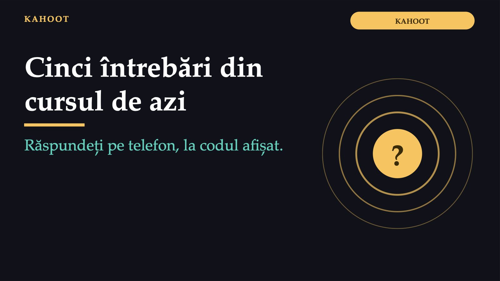
46 / 47Încheiem cu cinci întrebări pe telefon, din ce am lucrat azi. Puteți intra cu un pseudonim; rezultatul nu se notează.
Ce faceți diferit de mâine
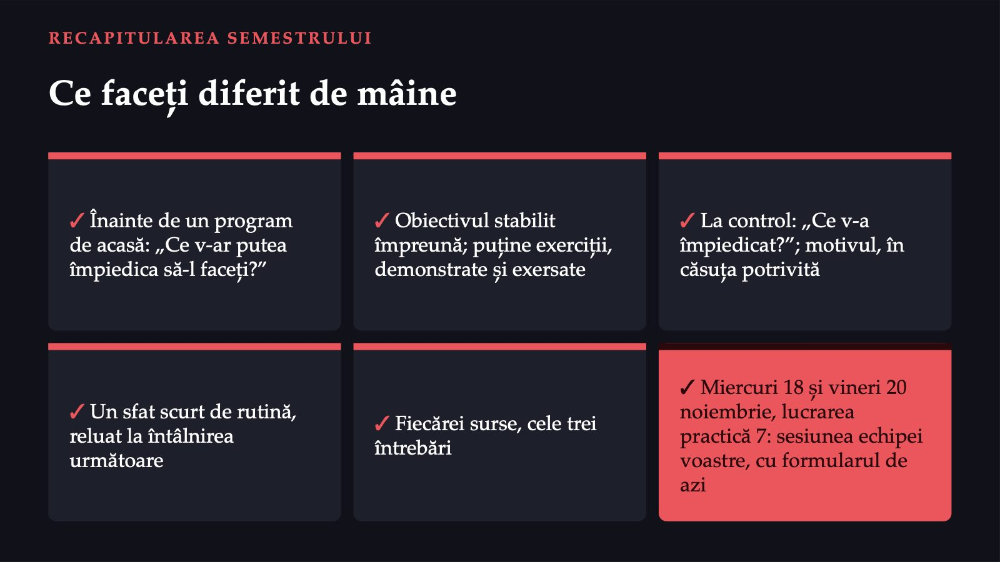
47 / 47De mâine, cinci lucruri. Înainte de a da un program de acasă, întrebați ce l-ar putea împiedica pe pacient să-l facă și scrieți răspunsul în fișă. Stabiliți obiectivul împreună și dați puține exerciții, demonstrate și exersate în fața voastră. La control, întrebați „Ce v-a împiedicat?” și puneți motivul în căsuța potrivită. Dați un sfat scurt de rutină și reveniți la el. Puneți fiecărei surse cele trei întrebări. Ne vedem la lucrarea practică 7, miercuri 18 sau vineri 20 noiembrie, după grupă, cu formularul de azi.
Săgeți sau spațiu: navigare · O: vedere de ansamblu · N: notele prezentatorului · F: ecran complet · Esc: închidere